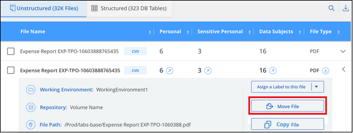

请求文档变更
请求文档变更 在 GitHub 上编辑
在 GitHub 上编辑 提供者指南
提供者指南管理私有数据
提供者
Cloud Data sense 为您提供了多种管理私有数据的方法。某些功能使您可以更轻松地为迁移数据做准备，而其他功能则允许您对数据进行更改。
-
如果要为某些数据创建副本并将其移动到其他 NFS 位置，可以将文件复制到目标 NFS 共享。
-
您可以将 ONTAP 卷克隆到新卷，同时在新克隆的卷中仅包含源卷中的选定文件。如果您要迁移数据，并且希望从原始卷中排除某些文件，则此选项非常有用。
-
您可以将文件从源存储库复制并同步到特定目标位置的目录。如果您要将数据从一个源系统迁移到另一个源系统，而源文件上仍有一些最终活动，则此功能非常有用。
-
您可以将 Data sense 正在扫描的源文件移动到任何 NFS 共享。
-
您可以删除那些看起来不安全或风险过高，无法留在存储系统中的文件，或者您已确定为重复的文件。

|
|
正在复制源文件
您可以复制 Data sense 正在扫描的任何源文件。根据您尝试完成的任务，复制操作有三种类型：
-
* 将文件 * 从相同或不同的卷或数据源复制到目标 NFS 共享。
如果要为某些数据创建副本并将其移动到其他 NFS 位置，则此功能非常有用。
-
* 将 ONTAP 卷 * 克隆到同一聚合中的新卷，但在新克隆的卷中仅包含源卷中的选定文件。
如果您要迁移数据，并且希望从原始卷中排除某些文件，则此选项非常有用。此操作将使用 "NetApp FlexClone" 用于快速复制卷，然后删除您 * 未 * 选择的文件的功能。
-
将文件 * 从单个源存储库（ ONTAP 卷， S3 存储分段， NFS 共享等）复制并同步到特定目标（目标）位置的目录。
这对于将数据从一个源系统迁移到另一个源系统的情况非常有用。初始副本之后、服务将根据您设置的计划同步所有更改的数据。此操作将使用 "NetApp Cloud Sync" 用于将数据从源复制并同步到目标的功能。
将源文件复制到 NFS 共享
您可以将 Data sense 正在扫描的源文件复制到任何 NFS 共享。NFS 共享不需要与 Data sense 集成，您只需知道要复制所有选定文件的 NFS 共享的名称，格式为 ` <host_name> ： /<share_path>` 。

|
您不能复制数据库中的文件。 |
-
要复制文件，您必须具有帐户管理员或工作空间管理员角色。
-
复制文件要求目标 NFS 共享允许从 Data sense 实例进行访问。
-
一次最多可以复制 100 ， 000 个文件。
-
在数据调查结果窗格中，选择要复制的一个或多个文件，然后单击 * 复制 * 。

-
要选择单个文件，请选中每个文件（
 ）。
）。 -
要选择当前页面上的所有文件，请选中标题行（
 ）。
）。 -
要选择所有页面上的所有文件，请选中标题行（
），然后显示在弹出消息中  下，单击 * 选择列表中的所有项（ xxx 项） * 。
下，单击 * 选择列表中的所有项（ xxx 项） * 。
-
-
在 Copy Files 对话框中，选择 * 常规复制 * 选项卡。

-
输入要复制所有选定文件的 NFS 共享的名称，格式为 ` <host_name> ： /<share_path>` ，然后单击 * 复制 * 。
此时将显示一个对话框，其中包含复制操作的状态。
您可以在中查看复制操作的进度 "操作状态窗格"。
请注意，您也可以在查看文件的元数据详细信息时复制单个文件。只需单击 * 复制文件 * 。

将卷数据克隆到新卷
您可以使用 NetApp _FlexClone _ 功能克隆 Data sense 正在扫描的现有 ONTAP 卷。这样，您就可以快速复制卷，同时仅包含选定的文件。如果要迁移数据，并且要从原始卷中排除某些文件，或者要创建卷的副本以进行测试，则此功能非常有用。
新卷将在与源卷相同的聚合中创建。在启动此任务之前，请确保聚合中有足够的空间容纳此新卷。如有必要，请联系您的存储管理员。
-
注意： * 无法克隆 FlexGroup 卷，因为 FlexClone 不支持这些卷。
-
要复制文件，您必须具有帐户管理员或工作空间管理员角色。
-
所有选定文件都必须来自同一个卷，并且该卷必须处于联机状态。
-
卷必须来自 Cloud Volumes ONTAP 或内部 ONTAP 系统。当前不支持任何其他数据源。
-
集群上必须安装 FlexClone 许可证。默认情况下，此许可证会安装在 Cloud Volumes ONTAP 系统上。
-
在 " 数据调查 " 窗格中，选择一个 * 工作环境 * 和一个 * 存储库 * 来创建筛选器，以确保所有文件都来自同一个 ONTAP 卷。

应用任何其他筛选器，以便您只能看到要克隆到新卷的文件。
-
在调查结果窗格中，选择要克隆的文件，然后单击 * 复制 * 。
-
要选择单个文件，请选中每个文件（
）。 -
要选择当前页面上的所有文件，请选中标题行（
）。 -
要选择所有页面上的所有文件，请选中标题行（
），然后显示在弹出消息中 下，单击 * 选择列表中的所有项（ xxx 项） * 。
-
-
在 Copy Files 对话框中，选择 * FlexClone * 选项卡。此页面显示要从卷克隆的文件总数（您选择的文件），以及未从克隆的卷中包含 / 删除的文件数（您未选择的文件）。

-
输入新卷的名称，然后单击 * FlexClone * 。
此时将显示一个对话框，其中包含克隆操作的状态。
新的克隆卷将在与源卷相同的聚合中创建。
您可以在中查看克隆操作的进度 "操作状态窗格"。
如果在源卷所在的工作环境中启用了 Data sense 后，最初选择了 * 映射所有卷 * 或 * 映射并分类所有卷 * ，则 Data sense 将自动扫描新克隆的卷。如果最初未使用上述任一选项，则如果要扫描此新卷，则需要执行以下操作 "手动对卷启用扫描"。
将源文件复制并同步到目标系统
您可以将 Data sense 正在扫描的源文件从任何受支持的非结构化数据源复制到特定目标位置的目录 ("Cloud Sync 支持的目标位置"）。初始复制后，文件中更改的任何数据将根据您配置的计划进行同步。
这对于将数据从一个源系统迁移到另一个源系统的情况非常有用。此操作将使用 "NetApp Cloud Sync" 用于将数据从源复制并同步到目标的功能。
|
|
您不能复制和同步数据库， OneDrive 帐户或 SharePoint 帐户中的文件。 |
-
要复制和同步文件，您必须具有帐户管理员或工作空间管理员角色。
-
所有选定文件都必须来自同一源存储库（ ONTAP 卷， S3 存储分段， NFS 或 CIFS 共享等）。
-
您需要激活 Cloud Sync 服务并至少配置一个数据代理，用于在源系统和目标系统之间传输文件。查看从开始的 Cloud Sync 要求 "快速启动问题描述"。
请注意， Cloud Sync 服务会为您的同步关系单独收取服务费用，如果您在云中部署数据代理，则会产生资源费用。
-
在数据调查窗格中，选择一个 * 工作环境 * 和一个 * 存储库 * 来创建筛选器，以确保所有文件都来自同一个存储库。
应用任何其他筛选器，以便您仅看到要复制并同步到目标系统的文件。
-
在调查结果窗格中，选中标题行（
），然后显示在弹出消息中 单击 * 选择列表中的所有项（ xxx 项） * ，然后单击 * 复制 * 。 -
在 Copy Files 对话框中，选择 * 同步 * 选项卡。

-
如果确实要将选定文件同步到目标位置，请单击 * 确定 * 。
Cloud Sync UI 将在 Cloud Manager 中打开。
系统将提示您定义同步关系。源系统会根据您在 Data sense 中选择的存储库和文件预先填充。
-
您需要选择目标系统，然后选择（或创建）计划使用的数据代理。查看从开始的 Cloud Sync 要求 "快速启动问题描述"。
这些文件将复制到目标系统，并根据您定义的计划进行同步。如果选择一次性同步，则文件只会复制和同步一次。如果选择定期同步，则会根据计划同步文件。请注意，如果源系统添加的新文件与您使用筛选器创建的查询匹配，这些 new 文件将复制到目标并在将来进行同步。
请注意，从数据感知调用某些常见 Cloud Sync 操作时，这些操作将被禁用：
-
不能使用 * 删除源上的文件 * 或 * 删除目标上的文件 * 按钮。
-
已禁用运行报告。
将源文件移动到 NFS 共享
您可以将 Data sense 正在扫描的源文件移动到任何 NFS 共享。NFS 共享不需要与 Data sense 集成（请参见 "正在扫描文件共享"）。
如果目标位置存在同名文件、则不会移动该文件。
|
|
您无法移动驻留在数据库中的文件。 |
-
要移动文件，您必须具有帐户管理员或工作空间管理员角色。
-
移动文件要求NFS共享允许从数据感知实例IP地址进行访问。
-
一次最多可以移动100、000个文件。
-
在数据调查结果窗格中，选择要移动的一个或多个文件。

-
要选择单个文件，请选中每个文件（
）。 -
要选择当前页面上的所有文件，请选中标题行（
）。
-
-
在按钮栏中，单击 * 移动 * 。

-
在 move Files 对话框中，以 ` <host_name> ： /<share_path>` 格式输入要移动所有选定文件的 NFS 共享的名称，然后单击 * 移动文件 * 。
请注意，在查看文件的元数据详细信息时，您也可以移动单个文件。只需单击 * 移动文件 * 。

正在删除源文件
您可以永久删除看似不安全或风险太大，无法留在存储系统中的源文件，或者已确定为重复的源文件。此操作为永久操作，不会撤消或还原。
您可以从 " 调查 " 窗格手动删除文件，也可以使用策略自动删除文件。
|
|
您不能删除数据库中的文件。 |
删除文件需要以下权限：
-
对于 NFS 数据—需要使用写入权限定义导出策略。
-
对于 CIFS 数据— CIFS 凭据需要具有写入权限。
-
对于 S3 数据 - IAM 角色必须包括以下权限：
s 3 ： DeleteObject
手动删除源文件
-
要删除文件，您必须具有帐户管理员或工作空间管理员角色。
-
一次最多可以删除 100 ， 000 个文件。
-
在数据调查结果窗格中，选择要删除的一个或多个文件。

-
要选择单个文件，请选中每个文件（
）。 -
要选择当前页面上的所有文件，请选中标题行（
）。 -
要选择所有页面上的所有文件，请选中标题行（
），然后显示在弹出消息中 下，单击 * 选择列表中的所有项（ xxx 项） * 。
-
-
在按钮栏中，单击 * 删除 * 。
-
由于删除操作是永久性的，因此您必须在后续的 Delete File 对话框中键入 "* 永久删除 * " ，然后单击 * 删除文件 * 。
您可以在中查看删除操作的进度 "操作状态窗格"。
请注意，您也可以在查看文件的元数据详细信息时删除单个文件。只需单击 * 删除文件 * 。

使用策略自动删除源文件
您可以创建自定义策略以删除与此策略匹配的文件。例如，您可能希望删除包含敏感信息且在过去 30 天内由 Data sense 发现的文件。
只有帐户管理员可以创建一个策略来自动删除文件。
|
|
与此策略匹配的所有文件将每天永久删除一次。 |
-
在数据调查页面中，选择要使用的所有筛选器来定义搜索。请参见 "筛选 " 数据调查 " 页面中的数据" 了解详细信息。
-
按所需方式获取所有筛选器特征后，单击 * 从此搜索创建策略 * 。
-
为策略命名，然后选择可由策略执行的其他操作：
-
输入唯一名称和问题描述。
-
选中 " 自动删除与此策略匹配的文件 " 复选框，然后键入 * 永久删除 * 以确认您希望此策略永久删除文件。
-
单击 * 创建策略 * 。

-
新策略将显示在策略选项卡中。与策略匹配的文件将在策略运行时每天删除一次。
您可以在中查看已删除的文件列表 "操作状态窗格"。